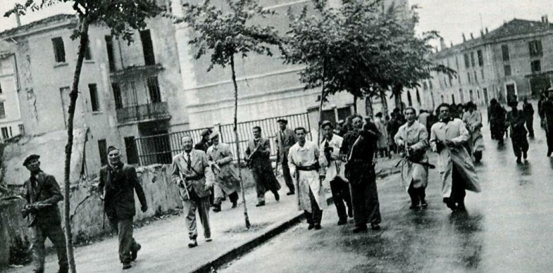
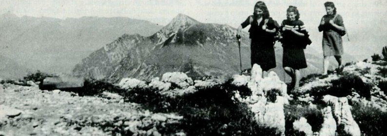
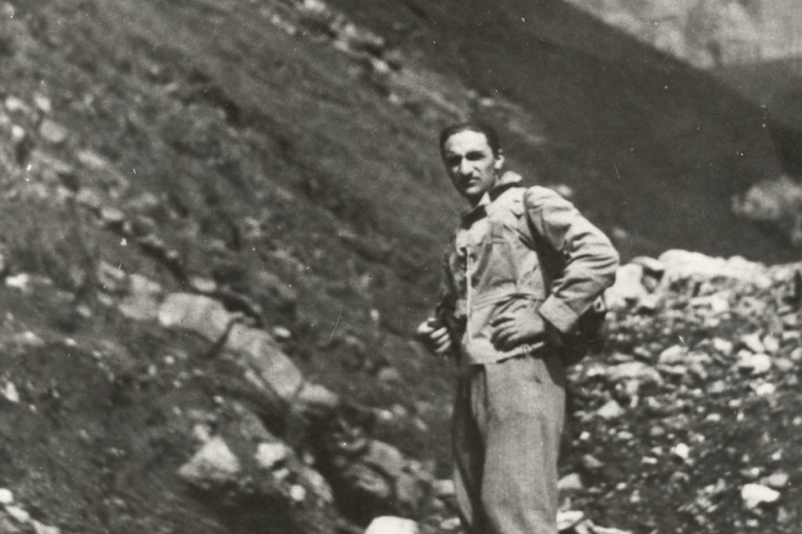

Ribelli per amore. Le Fiamme Verdi bresciane
9 maggio 2020
Non vi sono “liberatori”. Solo, uomini che si liberano.
Teresio Olivelli
Introduzione
Spesso pensiamo alla Resistenza come a un fenomeno monolitico, senza coglierne la straordinaria varietà di posizioni e di declinazioni ideali che, nei venti mesi compresi tra il settembre 1943 e l’aprile 1945, la sorressero mantenendola unita nella comune volontà di liberare l’Italia dal nemico nazifascista, per creare un paese libero e giusto. Ruolo decisamente importante ebbero, per esempio, le formazioni partigiane di matrice cattolica, operanti soprattutto nel Nordest.
Tra queste, sono certamente da ricordare le Fiamme Verdi, formazioni che prendevano il loro nome dalle mostrine verdi delle divise degli Alpini, dai cui reparti proveniva la gran parte degli ex militari che ne costituirono le primissime compagini. Operarono soprattutto nel Bresciano e nelle valli della Lombardia orientale, e a Reggio Emilia, affondando le radici nel cattolicesimo sociale e collaborando con le espressioni più avanzate e attente al sociale della Chiesa locale. Da queste parti, le altre formazioni ebbero un peso molto minore, comprese quelle organiche al Partito Comunista.
 Frontespizio de «il ribelle» – Homepage sito de il ribelle
Frontespizio de «il ribelle» – Homepage sito de il ribelleCome fa notare lo storico Rolando Anni, la caratteristica del movimento di liberazione in queste aree risiedeva proprio nella forte presenza dei cattolici. Nelle Fiamme Verdi, il proselitismo dei diversi partiti, e quindi il dibattito in senso strettamente politico, era bandito, perché ritenuto suscitatore di divisioni e perciò dannoso rispetto al compito primario della lotta contro i tedeschi e i fascisti, che richiedeva una forte unità di intenti. Il movimento, tuttavia, accoglieva anche sollecitazioni provenienti dalle varie esperienze dell’antifascismo storico. Figura chiave dell’intero movimento è stata quella di Teresio Olivelli, almeno fino alla data del suo arresto nell’aprile del ’44. Legato alla fondazione e all’attività del giornale clandestino «il ribelle», Olivelli incarnava l’anima più radicalmente spirituale e rivoluzionaria delle Fiamme Verdi: coltivatore di un sogno di rinnovamento morale della società italiana che eliminasse fin dalle radici la possibilità di un ritorno al fascismo.
La nascita
Quando, l’8 settembre del 1943, il Generale Badoglio annunciava l’armistizio tra Italia e gli Alleati anglo-americani, la nazione si ritrovò smarrita, senza un nemico chiaramente individuato contro cui combattere, senza una strategia. I tedeschi stavano già occupando gran parte dell’Italia settentrionale: ormai, da alleati erano diventati nemici. Chi non veniva sorpreso in caserma, disarmato e rinchiuso in un treno destinato in Germania, gettava la divisa nell’intento di salvarsi e andava a ingrossare le fila degli sbandati. Nel frattempo, Mussolini era stato fatto evadere dalla prigione sul Gran Sasso e posto a capo di un governo fantoccio eterodiretto dai nazisti. Da una parte, dunque, la Repubblica Sociale Italiana di Salò; dall’altra, il governo Badoglio e gli Alleati. Con chi schierarsi? Con chi stare?
Nel bresciano, prima che le Fiamme Verdi potessero sorgere e operare attivamente, ci volle del tempo. Nell’Alta Valcamonica, subito dopo l’8 settembre, era un continuo raccogliersi di uomini nelle baite, lontane dai centri dove tedeschi e fascisti avevano cominciato gli arruolamenti forzati e i rastrellamenti. In città, invece, gli uomini del Comitato di Liberazione Nazionale rappresentanti dei partiti politici si erano dati appuntamento nella cripta del Duomo Vecchio per organizzare la Resistenza armata. Le prime formazioni di partigiani – i “ribelli”, come li chiamava la gente – cominciarono subito a salire sopra Sonico e Corteno, a Bienno, a Croce di Marone, sul Colle di San Zeno, ai piedi del Monte Guglielmo, a Polaveno, a Bovegno, a Marmentino, a Bagolino, ad Anfo per sfuggire ai rastrellamenti e agli arresti. Tuttavia, i vari gruppi sparsi sul territorio iniziarono a operare in maniera organizzata solo in ottobre, quando si avviarono i primi contatti per costituire una formazione ampia e unitaria che li comprendesse tutti. La casa di Astolfo Lunardi divenne in quei giorni una specie di quartier generale della Resistenza: vi andavano i giovani a prendere ordini, e da lì partivano le direttive per la città e la provincia.
A novembre, il tenente degli alpini Gastone Franchetti (nome di battaglia “Fieramosca”) prese l’iniziativa di organizzare nelle valli le prime brigate operative. Insieme a Rino Dusatti e altri giovani, si mise in contatto con gli antifascisti che gravitavano attorno al foglio clandestino «Brescia Libera» (il cui primo numero, ciclostilato, era stato distribuito in città il 19 novembre) e all’oratorio dei Padri Filippini della Pace. L’idea raccolse un discreto consenso.
Il 30 novembre, in casa dell’ingegner Mario Piotti, si tenne un incontro tra i principali esponenti del movimento partigiano provenienti da Brescia, Trento, Milano, Sondrio, Padova, Belluno, Lecco e Como; in quella occasione nacquero le Fiamme Verdi e fu steso il celebre Regolamento. Tra i partecipanti alla riunione c’era anche Teresio Olivelli, sottotenente degli alpini di ritorno dalla tragica campagna di Russia da poco fuggito dal lager di Markt Pongau (nei pressi di Salisburgo, nell’Austria dell’Anschluss), che, dopo un breve passaggio da Udine, si era trasferito a Brescia. Si costituirono ufficialmente, inoltre, i tre battaglioni operativi nelle valli – il Valcamonica, il Valsabbia e il Valtrompia – e fu assegnato a ognuno un comandante – rispettivamente, Ferruccio Lorenzini, Giacomo Perlasca, Peppino Pelosi. Il comando generale fu, invece, affidato al generale alpino Luigi Masini (nome di battaglia “Fiori”).
Le prime azioni
Le Fiamme Verdi furono riconosciute dal CLNAI (Comitato di Liberazione Nazionale Alta Italia) come organizzazioni apolitiche autonome dopo un confronto tra Enzo Petrini e Ferruccio Parri a Milano nel dicembre del ’43. Gli esordi furono, tuttavia, piuttosto confusi e titubanti, dominati da una sostanziale assenza di strategia e guidati dall’intuito quando non dall’improvvisazione. Fortunatamente si fecero sentire l’influenza di Teresio Olivelli e l’organizzazione militare di Romolo Ragnoli, comandante prima delle brigate e poi delle divisioni in Valle Camonica.
 Partigiani in montagna (1944) | © Archivio storico della Resistenza bresciana e dell’età contemporanea
Partigiani in montagna (1944) | © Archivio storico della Resistenza bresciana e dell’età contemporaneaIl lungo inverno del ’43-’44, nonostante l’impegno e l’entusiasmo, fu tragico. Prima per il sacrificio di Ferruccio Lorenzini, il quale, da subito installatosi in Valcamonica, fu catturato dalla Guardia Nazionale Repubblicana, pubblicamente bastonato, legato mani e piedi, messo alla berlina e poi fucilato. In gennaio, poi, si ebbero due ondate di arresti che colpirono personaggi di primo piano della neonata Resistenza bresciana: padre Carlo Manziana, Peppino Pelosi, Andrea Trebeschi, Astolfo Lunardi, Ermanno Margheriti, Mario Bendiscioli, i fratelli Salvi, Don Vender, Giacomo Perlasca e Mario Bettinzoli. Lunardi e Margheriti, in particolare, furono quasi subito fucilati, cosa che indignò e commosse molti tra partigiani e civili.
La morte di Teresio Olivelli
Teresio Olivelli fu invece arrestato a Milano il 27 aprile 1944. Incarcerato e deportato nel lager di Flossenburg e poi in quello di Ersbruck, morì il 17 gennaio del ’45 a seguito delle percosse ricevute per aver tentato di difendere un compagno di prigionia malmenato da un kapò. Insieme a lui venne preso anche Rolando Petrini, di soli 24 anni, che sarebbe morto di stenti a Mauthausen un anno dopo. Il 20 maggio toccò invece a don Battista Picelli, di soli 29 anni; caduto in un infame tranello della famigerata Banda Marta, fu brutalmente bastonato e ucciso mentre svolgeva la sua missione di cura d’anime anche presso le formazioni partigiane della media Valcamonica.
La ripresa
Tra settembre e ottobre 1944 i rastrellamenti e le fucilazioni divennero ancora più pressanti. Questa volta, però, le Fiamme Verdi resistettero e ottennero alcuni successi inaspettati. In Alta Valcamonica i partigiani riuscirono persino a mettere in atto un esperimento democratico: allontanato il podestà di Ponte di Legno, si procedette all’elezione della giunta comunale. Figura di riferimento fu il giovane parroco del paese, don Giovanni Antonioli, fervente antifascista. Altri comuni dell’Alta Valle seguirono questo esempio.
In generale, l’esperienza di quei mesi
aveva spinto le Fiamme Verdi a strutturarsi in senso più serratamente militare.
Infatti, nonostante i mesi invernali fossero un momento di stasi delle attività
ribellistiche, il movimento partigiano non entrò in crisi come l’anno
precedente.
Le battaglie del Mortirolo
In questo scenario ebbero luogo, tra il febbraio e il maggio 1945, nella zona del Passo Mortirolo, le uniche due battaglie campali della Resistenza bresciana, tra le più importanti della guerra di liberazione. La prima si svolse tra il 22 e il 27 febbraio 1945, periodo lungo il quale i fascisti della I Legione d’assalto “M. Tagliamento” cercarono più volte di accerchiare e soverchiare i partigiani, senza successo. Il 23 marzo, poi, poco più di duecento Fiamme Verdi furono attaccate da oltre duemila militi fascisti della “Tagliamento”, che a più riprese tentarono lo sfondamento dei passi. Le ostilità erano supportate dall’artiglieria tedesca, che sparava contro le postazioni partigiane con i cannoni. I combattimenti durarono, a più riprese, fino al 1° maggio 1945, quando i tedeschi firmarono la resa senza condizioni nelle mani degli Alleati.

Partigiani in città (1945) | © Archivio storico della Resistenza bresciana e dell’età contemporaneaLa stampa clandestina
A sorreggere fin dagli esordi l’intera organizzazione delle Fiamme Verdi fu quello che poi sarebbe divenuto l’elemento più caratteristico della Resistenza cattolica: la stampa clandestina. Gli obiettivi che si proponeva erano principalmente due: informare i combattenti sui fatti bellici più importanti ed educare i lettori al confronto e al dialogo democratico, proponendo riflessioni (ma anche provocazioni) ideali, culturali e morali rivolte alle “libere coscienze” degli Italiani.
Certo, osservati con gli occhi di oggi, questi fogli ciclostilati o stampati in modo precario, pieni di refusi e talvolta traboccanti di retorica non sembrano vantare una funzione centrale nella lotta partigiana; tuttavia, le notizie fittamente accumulate nello spazio stretto delle pagine, gli articoli corposi e spesso non troppo agevoli da leggere ci comunicano un’incontenibile ansia di esprimersi e un impellente bisogno di spiegare ogni cosa che stava accadendo.
Il periodico senz’altro più importante è «il ribelle». Fondato a Brescia nel 1944 (ma stampato tra Milano e Lecco) da Teresio Olivelli, Laura Bianchini, Claudio Sartori, don Giuseppe Tedeschi, Rolando ed Enzo Petrini, Franco Salvi, Claudio Sartori, don Giuseppe Tedeschi, e molti altri, il giornale fu l’organo ufficiale delle «Fiamme Verdi» bresciane e fu da subito diffuso in tutta la Lombardia in un altissimo numero di copie (15.000 per ciascun numero).

Staffette partigiane sulla Corna Blacca (1944) | © Archivio storico della Resistenza bresciana e dell’età contemporaneaFin dagli inizi, il progetto de «il ribelle» si presentava come molto ambizioso: era diffuso grazie a una fitta rete di volontari, collaboratori e sostenitori nella città, nelle valli bresciane e bergamasche, nella pianura lombarda e nei principali centri della Lombardia e dell’Emilia; spesso era anche ristampato localmente. Dapprima letto soprattutto per le notizie, in breve divenne il vero organo d’informazione principale, che sostituì i periodici di regime, che badavano più a nascondere gli insuccessi che a comunicare notizie.
L’intenzione comunicativa prevalente negli articoli de «il ribelle» era d’impronta pedagogica. Persino le notizie minime, le più irrilevanti, svolgevano questa funzione: portare il lettore a prendere coscienza del vuoto morale rappresentato dal fascismo. Dal punto di vista ideologico, si possono riscontrare due spinte complementari. Da un lato, quella di Olivelli verso una profonda e rivoluzionaria innovazione della società italiana; dall’altro, quella più conservatrice e di matrice più squisitamente cattolico-democratica, tendente a moderare l’atteggiamento rivoluzionario. Sarà quest’ultima, pian piano, a prendere il sopravvento.
Conclusioni
Le Fiamme Verdi, come si diceva, non facevano proselitismo politico; all’interno delle formazioni cattoliche militavano popolari, comunisti, socialisti, azionisti, liberali, badogliani e semplici cittadini. Vi era, quindi, una straordinaria varietà di posizioni.
Si leggano, per comprendere meglio, alcuni
passi dello Schema di discussione di un programma ricostruttivo ad
ispirazione cristiana tracciato da Teresio Olivelli:
Che cosa vogliamo:
- Libertà:
di pensare, di esprimersi, di organizzarsi, di partecipare alla formazione
della volontà della comunità.
- Uguaglianza: non astratta, ma concreta
- (…)
- Il lavoro in tutte le sue forme
- esprimerà nella società il valore della persona e l’adempimento del suo
- principale dovere politico. Da ciascuno, secondo le sue attitudini, a ciascuno
- secondo i suoi meriti. (…)
Che cosa ripudiamo:
Ladittatura, lo statalismo mortificatore. La guerra come mezzo di affermazionedei propri diritti, così tra le nazioni come fra le classi.
Ilprivilegio della nascita e dell’oro, lo sfruttamento dell’uomo sull’uomo. (…)
Le forme di produzione capitalisticache fanno del lavoro una merce e subordinano a fini non propri l’attivitàdell’operaio, facendone un proletario. L’anticristiana divisione della societàin classi economicamente privilegiate le une, diseredate le altre (…).
Il vero collante “ideologico”, accanto all’idea che solo la propaganda contro il fascismo e gli occupanti potesse essere tollerata, era il convincimento che la battaglia dovesse svolgersi contro il fascismo, non contro i fascisti. La dignità della persona, con i suoi diritti umani, prevaleva su ogni distinzione di ordine politico o partitico. Il pentimento, la conversione, la redenzione – principi fondanti della tradizione culturale cattolica – non cessarono mai di essere riconosciuti e predicati.

Anche se una certa storiografia – soprattutto d’impronta marxista – ha spesso dipinto l’attività delle Fiamme Verdi come dominata dall’attendismo, sostanzialmente immobile nell’attesa degli Alleati e strategicamente orientata a non alienarsi, dopo la guerra, l’appoggio politico dei gruppi moderati e conservatori, furono proprio alcuni partigiani comunisti (come Giorgio Bocca) a riconoscere l’importanza delle formazioni cattoliche per la Resistenza del Nordest. Gli studi di Dario Morelli e Rolando Anni, che ancor oggi costituiscono la ricostruzione storica più precisa e documentata di tutti gli eventi che riguardarono gli anni dal ’43 al ’45 a Brescia e provincia, hanno dimostrato questa spontanea convinzione.
La parabola umana e spirituale di Teresio Olivelli, in particolare, incarna la ricerca di quella profonda trasformazione morale, l’unica in grado di scacciare per sempre il fascismo dalle coscienze degli Italiani, che è l’obiettivo più ambizioso – e allo stesso tempo, più difficile da realizzare – che la Resistenza cattolica ha lasciato in eredità alle generazioni future, compresa la nostra.
Per approfondire
- www.fiammeverdibrescia.it e www.il-ribelle.it: i siti ufficiali dell’Associazione Fiamme Verdi Brescia con news e approfondimenti storici curati da Danilo Aprigliano con la supervisione storica di Rolando Anni e Roberto Tagliani;
- D. Morelli, La montagna non dorme. Le Fiamme Verdi nell’alta Valcamonica (1968), Brescia, Morcelliana, 20152;
- R. Anni, Storia della Resistenza bresciana 1943-1945, Brescia, Morcelliana, 2005.
Articolo pubblicato il 27 aprile 2020 su The Pitch Blog